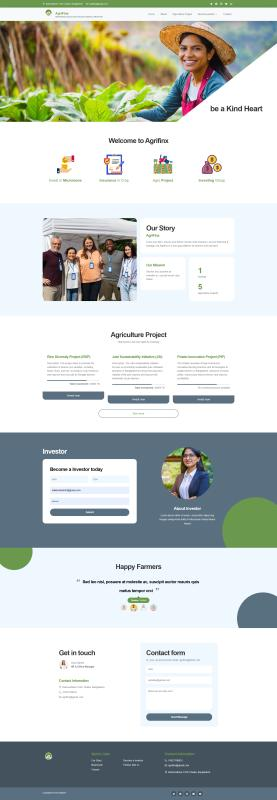
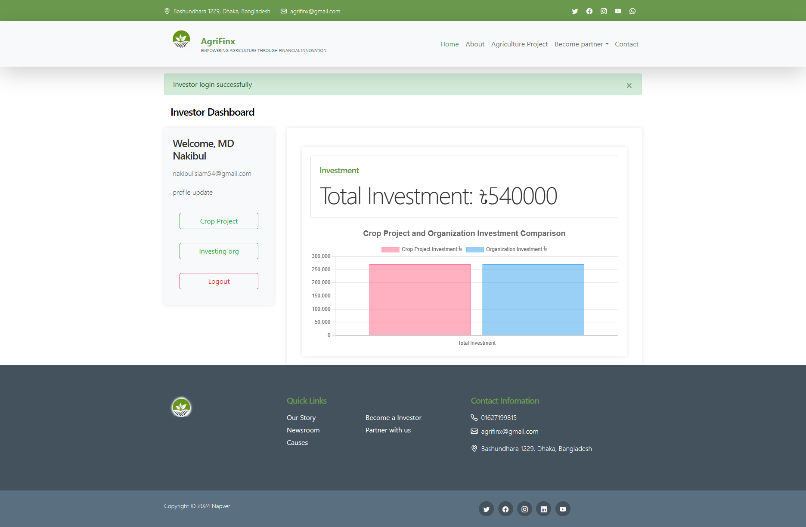
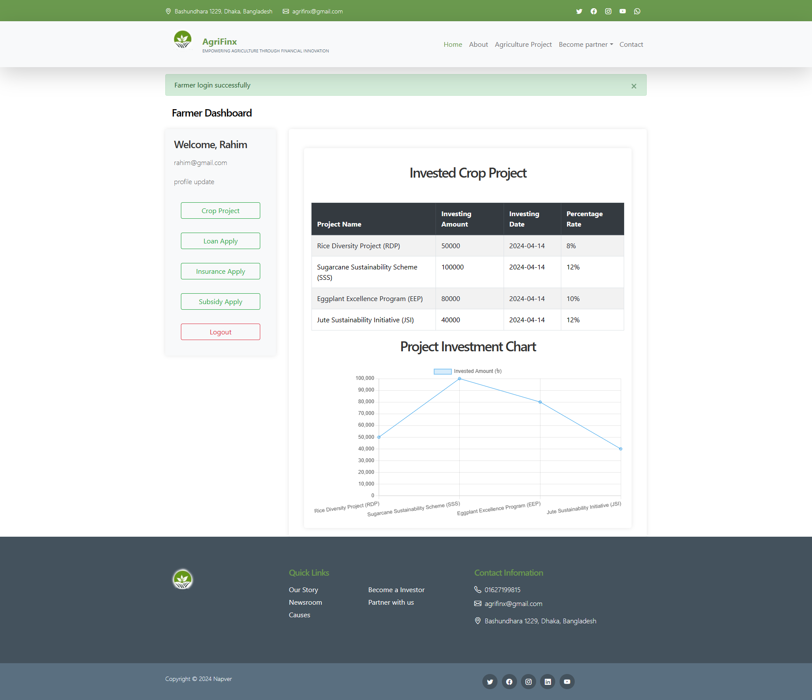

Web Platform · Agricultural Finance
AgriFinx: Connecting Farmers, Investors, and Financing
A farmer with a good crop plan and no capital, an investor with capital and no way to reach that farmer, and an agricultural organization stuck in the middle trying to run loans, insurance, and subsidies through paperwork — that's the gap AgriFinx was built to close. Instead of three separate, disconnected processes, it puts farmers, investors, and organizations on the same platform, each with exactly the tools their side of the relationship needs.
For a farmer, that means being able to put a crop project in front of the platform — what you're planting, the expected yield, the numbers behind it — and get a risk assessment back before committing real money. From there, the same project can be used to apply for a microloan, insurance coverage against crop failure, or a subsidy through a local agricultural officer, all from one place instead of three separate offices.
For an investor, a crop project isn't just a good story — it's something they can actually put money behind, alongside everyone else's, and track. AgriFinx lets them invest directly in individual crop projects or in the agricultural organizations that supply loans, insurance, and subsidies to farmers, turning "supporting agriculture" from a donation into a real, diversified investment, with a dashboard that shows exactly where the money went and what it's earning.
Agricultural organizations sit in the middle of that exchange: they take in investment, decide how to allocate it across crop projects, and are the ones actually issuing the microloans and insurance coverage farmers apply for. And behind all of it, an admin panel keeps the platform itself honest — adding new crops and keeping their prices current so every risk assessment and every investment decision is working off real market numbers, not stale data.
Around the Platform


